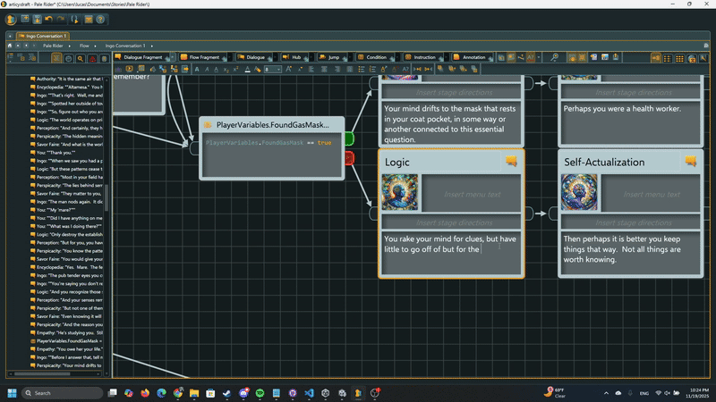
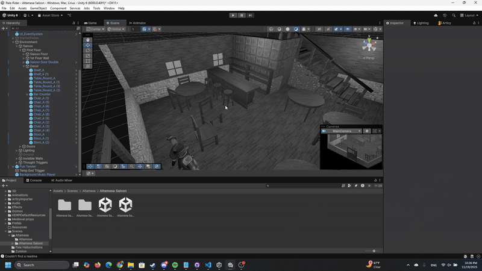
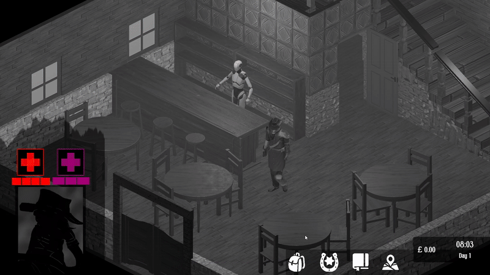

The year is 1512 after the Pale. Mankind is fractured, confined to isolas where the Pale hasn’t yet reached. Only fragments of the old world survive. But there are those for whom the Pale is not the end of the world. They are the line that holds the world together, they are the forewarning of the Pale. They are couriers that connect Earth’s scattered isolas—forecasters of the apocalypse.
They are Pale Riders…


From the overarching world to the smallest bark of dialogue, all narrative content in this game has been crafted from the ground up to provide a deep and enthralling experience.

Designed the game's locations from scratch to ensure visual style, storytelling consistency through the use of free as well as tailored assets, scripts, lighting, and visual effects.

Hand-crafted User Interface to ensure consistent visual style as well as ease of access for users, all while easily blending into the aesthetics of the game and its world

Worked with C# to create player controllers, scripted events, core systems such as dialogue, inventory management, etc., providing the basis of the game's core functionality.